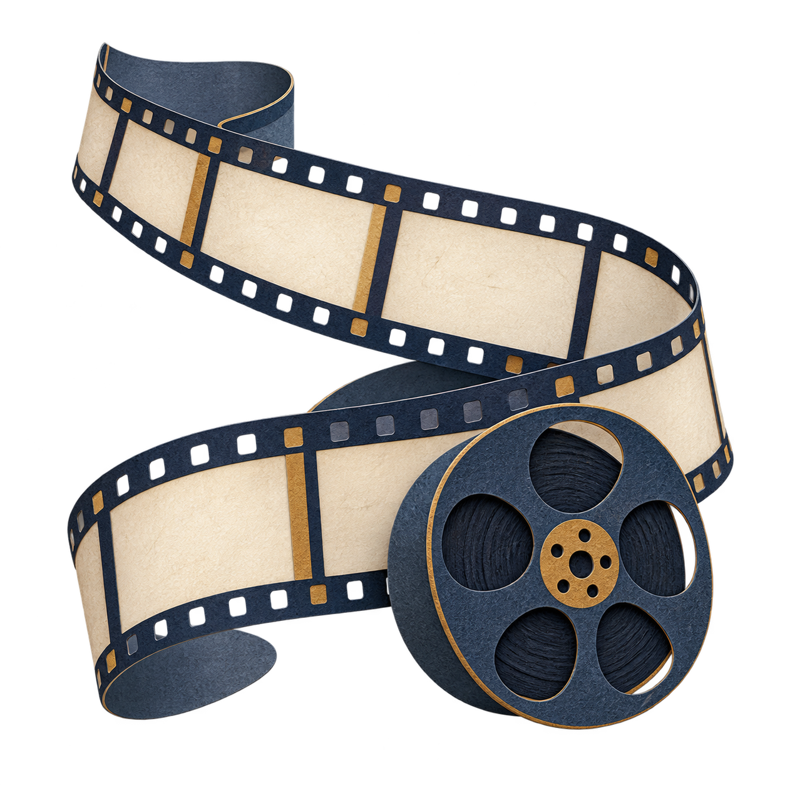
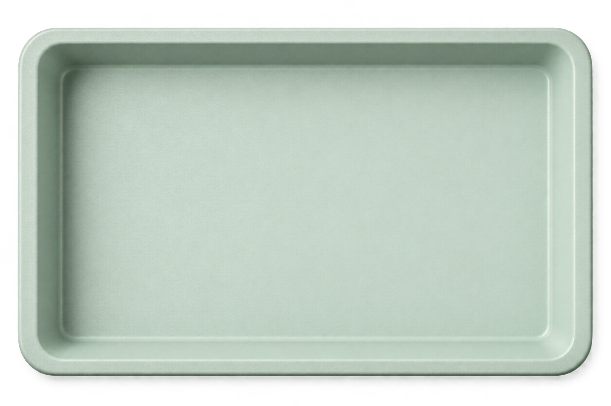

表达与接收之间Between speaking and hearing
双视角问卷 · 5 类沟通场景 · 344 份有效问卷Two questionnaire perspectives · five contexts · 344 valid responses
看看这个研究Explore the research
电影与语言Cinema & languageJINGHAN WANGHow 航运研究Shipping researchJINGHAN WANGNotes
航运研究Shipping researchJINGHAN WANGNotes 编辑与写作Editing & writing
编辑与写作Editing & writing “莓”好吉乡A blueberry project
“莓”好吉乡A blueberry project 月球的十二秒Twelve secondsSCROLL TO EXPLORE ↓
月球的十二秒Twelve secondsSCROLL TO EXPLORE ↓一位关系一般的同学，向你展示挑选了很久的衣服或球鞋。A classmate shows you clothes or shoes they spent a long time choosing.
问卷第 6 题 · 情境节选Questionnaire item 6 · adapted scenario“你自己觉得好看就好啊。”“As long as you think it looks good.”
此刻站在表达者一侧：你会怎样回应？一句话的意图，并不能替听者决定感受。From the speaker’s side: what would you say? Intention alone cannot determine how a response is received.
双视角问卷 · 5 类沟通场景 · 344 份有效问卷Two questionnaire perspectives · five contexts · 344 valid responses
看看这个研究Explore the research《控方证人》与《阿甘正传》中的语言、权威与评价。Language, authority and evaluation in Witness for the Prosecution and Forrest Gump.
进入四组场景Explore four scenesALSO IN THE ARCHIVE / C3 & C5航运市场里的便利收益Convenience benefits in the shipping market↗先注意颜色，再问自己为什么停下。First notice the colour. Then ask what made you stop.
翻开 How I SeeOpen How I See个人摄影正在选片。这里先呈现色彩与装帧。Personal photographs are being selected. Explore the colour and book design for now.
先出片，再把它放到旁边。Let the print emerge, then settle beside the camera.
随笔、观影笔记，还有没有急着想明白的事。Essays, film notes, and questions I’m still sitting with.
a few things to keep.
我会为了一个镜头停下来，也会对一句话追问很久。喜欢故事带来的感动，也想知道它是怎样被讲出来的。I stop for a shot, and linger over a sentence. I like being moved by a story—and wondering how it was told.
吉林大学 · 汉语言文学，辅修法学
香港中文大学暑校 · Language and Society
研究、写作、编辑与品牌策划。Jilin University · Chinese Language and Literature; minor in Law
CUHK Summer School · Language and Society
Research, writing, editing and brand planning.
curious about
the little things.
喜欢的东西，也藏着我做事的线索。Things I love, and clues to the things I make.

点开一个物件，听听它背后的故事。Pick an object. There’s a story behind it.
从一句你好开始。It starts with hello.
写一张明信片Write a postcard